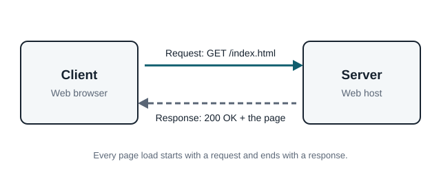

The Request and Response Cycle
When you type a web address, your browser (the client) sends an HTTP request to the server that hosts the site. The server reads the request, finds the file or data, and sends back an HTTP response. The response includes a status code, headers that describe the content, and the content itself, such as an HTML page.

Steps in a Page Load
- The browser looks up the server's IP address using DNS.
- The browser opens a connection to the server.
- The browser sends a request, such as
GET /index.html. - The server sends a response with a status code and the page.
- The browser reads the HTML and sends more requests for images, CSS, and scripts.
Common HTTP Methods
The method tells the server what the client wants to do.
| Method | Purpose | Example |
|---|---|---|
GET | Get a resource | Loading a web page |
POST | Send data to the server | Submitting a form |
PUT | Replace a resource | Updating a saved profile |
DELETE | Remove a resource | Deleting a post |
Status Codes
Every response starts with a three digit status code. The first digit shows the type of result.
- 2xxSuccess: 200 OK means the request worked.
- 3xxRedirect: 301 Moved Permanently sends the browser to a new address.
- 4xxClient Error: 404 Not Found means the page does not exist.
- 5xxServer Error: 500 Internal Server Error means the server had a problem.
HTTP Is Stateless
Each request stands on its own. The server does not remember earlier requests by default. Websites use cookies and sessions to remember things like a login or a shopping cart between requests.
Try it: In Chrome, press F12 and open the Network tab, then reload this page. You will see every HTTP request the page makes.